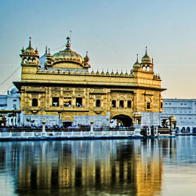
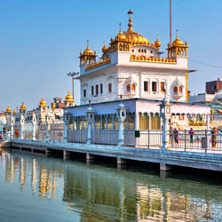
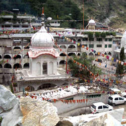
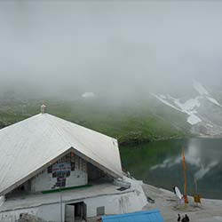

Sikhism in India
ਭਾਰਤ ਵਿੱਚ ਸਿੱਖ ਧਰਮ
Indian Sikhs number approximately 21 million people and account for 1.7% of India's population as of 2011, forming the country's fourth-largest religious group. The majority of the nation's Sikhs live in the northern state of Punjab, which is the only Sikh-majority administrative division in the world.
India is home to the majority of the global Sikh population, and also has the second-largest Sikh proportion in the world, behind Canada.
MOST HOLIEST PLACES OF SIKHISM

Golden Temple
The Golden temple is located in the holy city of the Sikhs, Amritsar. The Golden temple is famous for its full golden dome, it is one of the most sacred pilgrim spots for Sikhs. The Mandir is built on a 67-ft square of marble and is a two storied structure.
The man-made pool on the site of the temple was completed by the fourth Sikh Guru, Guru Ram Das, in 1577.[6][7] In 1604, Guru Arjan Dev, the fifth Sikh Guru, placed a copy of the Adi Granth in Harmandir Sahib and is the prominent figure in development of gurudwara who built it in the 16th Century
Tarn Taran
Tarn Taran district is one of the districts in the Majha region of Punjab, India. The main cities are Tarn Taran Sahib, Bhikhiwind, Khadur Sahib and Patti. The City of Tarn Taran Sahib is a holy place for Sikhs.
Tarn Taran district was formed in 2006 out of Amritsar District. The declaration to this effect was made by Captain Amarinder Singh, Chief Minister of Punjab, during the celebrations marking the martyrdom day of Sri Guru Arjan Dev Ji. With this, it became the 19th district of Punjab.
Tarn Taran Sahib was founded by the Fifth Sikh Guru, Shri Guru Arjan Dev Ji (1563–1606). He was so enchanted by its natural beauty that he established a town and named it Tarn Taran.


Manikaran Saheb
Manikaran is located in the Parvati Valley on river Parvati, northeast of Bhuntar in the Kullu District of Himachal Pradesh. It is at an altitude of 1760 m and is located 4 km from Kasol, about 45 km from Kullu and about 35 km from Bhuntar.
This small town attracts tourists visiting the hot springs and pilgrim centres of Manali and Kullu. An experimental geothermal energy plant has also been set up here.
Manikaran is a pilgrimage centre for Hindus and Sikhs. The Hindus believe that Manu recreated human life in Manikaran after the flood, making it a sacred area.
Hemkund Sahib Gurdwara
Hemkund Sahib (also spelled Hemkunt), formally known as Gurudwara Shri Hemkund Sahib Ji, is a Sikh place of worship and pilgrimage site in Chamoli district, Uttarakhand, India. It is devoted to Guru Gobind Singh (1666–1708), the tenth Sikh Guru, and finds mention in Dasam Granth. With its setting of a glacial lake surrounded by seven mountain peaks, each adorned by a Nishan Sahib on its cliff, it is according to the Survey of India located in the Garhwal Himalaya at an elevation of 4,160 meters (13,650 feet)
It is approached from Govindghat on the Rishikesh-Badrinath highway. The main town near Gobindghat is Joshimath. The elevation of the lake at Hemkund is approximately 13,650 feet.

Copyright 2023 © VR one. All Rights Reserved. Privacy Policy